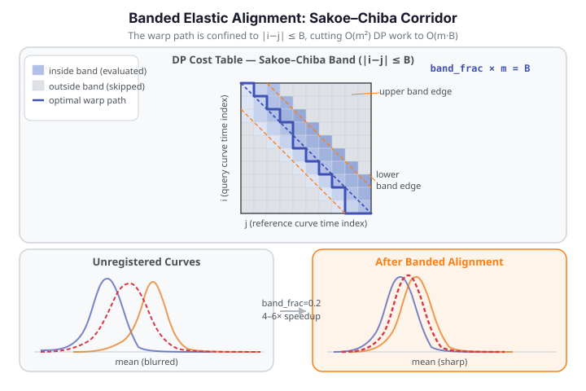

Banded Elastic Alignment¶
karcher_mean_with_band computes the same Fisher-Rao Karcher mean as karcher_mean, but restricts the dynamic-programming alignment step to a Sakoe–Chiba band — a diagonal corridor around the main diagonal of the DP cost table. Cells outside the band are never evaluated, cutting the per-pair alignment cost from \(O(m^2)\) to \(O(m \cdot B)\) where \(B = \text{band\_frac} \times m\). For smooth functional data with moderate phase variation, the global optimum lies inside a narrow band, so the constrained search is both fast and accurate. Measured speedup: 4–6× over the unbanded version.

The DP table in the diagram has m × m cells. The blue diagonal stripe is the Sakoe–Chiba band: cells inside are evaluated (colour-coded by accumulated alignment cost), cells outside (grey) are skipped entirely. The orange boundary lines mark the band edges at |i − j| = B. The bold warp path travels within the stripe from the top-left corner to the bottom-right corner. Setting band_frac=None fills the entire grid — reproducing the exact unbanded Karcher mean.
How it works¶
The Sakoe–Chiba constraint (Sakoe & Chiba, 1978) restricts the dynamic programming search at each step to the diagonal strip:
Inside the band the algorithm is identical to the unconstrained version: it accumulates squared SRSF distance and backtracks to find the optimal monotone warp. Outside the band, no costs are computed. The resulting warp is the best monotone path within the constraint — not globally optimal, but for smooth functional data with mild phase variation, the constraint is rarely active.
When band_frac=None, the full \(m \times m\) grid is searched and the result is mathematically identical to calling karcher_mean directly.
Complexity justification: why O(m·B) vs O(m²)¶
The full, unconstrained DP fills all \(m \times m\) cells of the cost table — one cell per pair of grid indices \((i, j)\). For a single pair of curves, this is \(O(m^2)\) work; for \(n\) curves (pairwise Karcher iteration) the per-iteration cost scales as \(O(n \cdot m^2)\).
The Sakoe–Chiba band evaluates only the cells satisfying \(|i - j| \leq B\). At each of the \(m\) rows, the band spans at most \(2B + 1\) columns, so the total number of evaluated cells is \(\approx m \cdot (2B + 1) = O(m \cdot B)\). With \(B = \text{band\_frac} \times m\), the per-pair cost becomes \(O(m^2 \cdot \text{band\_frac})\) — linear in the band width.
For band_frac=0.2 on a 365-point grid, this is roughly \(365 \times 73 \approx 26{,000}\) cells vs \(365^2 \approx 133{,000}\) cells — about a 5× reduction, matching the observed 4–6× speedup. The key assumption is that the optimal monotone warp path stays within \(|i - j| \leq B\); this holds for smooth data with moderate phase variation but breaks down for long-range phase shifts.
Band caveat: long-range phase shifts¶
Narrow band_frac clips the warp path for long-range phase shifts
If a feature in your functional data is displaced by more than \(B = \text{band\_frac} \times m\) grid points from its corresponding position in the Karcher mean (a long-range phase shift), the optimal warp path runs outside the band. In that case:
- The banded DP backtracks along the nearest-feasible path inside the band — a suboptimal warp.
- The Karcher mean is computed from curves that were not fully aligned, producing a biased mean that blurs the true feature location.
- Downstream distance matrices computed with the band will underestimate the true elastic distances between curves with large phase shifts.
Signs of band clipping:
- pairwise_correlation_score is noticeably lower for the banded result than for a small-sample unbanded reference.
- The Karcher mean looks smeared compared to the unbanded mean.
- Warping functions gammas hit or cluster near the band boundary.
Remedies:
- Increase band_frac (e.g. from 0.2 to 0.4 or 0.5).
- Use band_frac=None for datasets where the phase variation exceeds a third of the domain length.
- Pre-align curves using least_squares_shift_registration to remove the bulk of the rigid-shift component before running banded elastic alignment.
API reference¶
karcher_mean_with_band¶
from fdars import alignment
result = alignment.karcher_mean_with_band(
data, # ndarray (n, m) — curves on the shared grid
argvals, # ndarray (m,) — evaluation grid
band_frac, # float in (0, 1] — Sakoe-Chiba half-width as fraction of m
# (None = unbanded, exact Karcher mean)
)
The result dict has exactly the same keys as karcher_mean:
| Key | Type | Description |
|---|---|---|
"mean" |
ndarray (m,) |
Karcher mean function |
"mean_srsf" |
ndarray (m,) |
Mean in SRSF representation |
"aligned_data" |
ndarray (n, m) |
All curves aligned to the mean |
"gammas" |
ndarray (n, m) |
Warping functions for each curve |
"n_iter" |
int |
Number of Karcher iterations taken |
"converged" |
bool |
Whether the algorithm converged |
Banded distance matrices¶
The same Sakoe–Chiba constraint applies to the banded pairwise distance variants:
# Self-distance matrix (n × n) with band constraint
D_self = alignment.elastic_self_distance_matrix_with_band(
data, argvals, band_frac=0.2
)
# Cross-distance matrix (n_train × n_test)
D_cross = alignment.elastic_cross_distance_matrix_with_band(
data_train, data_test, argvals, band_frac=0.2
)
These mirror elastic_self_distance_matrix and elastic_cross_distance_matrix — only the per-pair DP is banded.
Choosing band_frac¶
There is no automatic band selection — band_frac is an explicit parameter because the optimal value depends on the magnitude of phase variation in your data.
| Guideline | band_frac |
|---|---|
| Mild phase variation (small warps, smooth data) | 0.1 – 0.2 |
| Moderate phase variation | 0.2 – 0.4 |
| Large phase variation | 0.4 – 1.0 (or use unbanded) |
| Quality degraded vs. unbanded result | widen band_frac |
Starting point: try band_frac=0.2 and compare quality scores (e.g., pairwise_correlation_score) against the unbanded result. Widen the band until the quality stabilises.
band_frac=None gives the exact unbanded result and is the right choice when accuracy matters more than speed (small datasets) or when the phase variation is large enough to push the optimal warp outside any narrow band.
Worked example¶
The example below loads the Canadian Weather temperature dataset and runs karcher_mean_with_band on a lightweight subset (8 stations), then also computes the banded self-distance matrix.
import numpy as np
from docs_data import load_canadian_weather
from fdars import alignment
rng = np.random.default_rng(7)
# Load Canadian Weather — 35 stations × 365 days
day, X, meta = load_canadian_weather("temperature")
# Lightweight subset: 8 stations (fast, deterministic)
n_sub = 8
idx = rng.choice(X.shape[0], n_sub, replace=False)
Xs = X[idx]
# Banded Karcher mean — band_frac=0.2 (≈73-day band on a 365-point grid)
res = alignment.karcher_mean_with_band(Xs, day, band_frac=0.2)
mean = np.asarray(res["mean"])
gammas = np.asarray(res["gammas"])
print(f"Dataset: {n_sub} stations x {day.shape[0]} days")
print(f"band_frac: 0.2 (B = {int(0.2 * len(day))} grid points)")
print(f"Converged: {res['converged']} in {res['n_iter']} iterations")
print(f"Mean range: [{mean.min():.1f}, {mean.max():.1f}] °C")
print(f"Gammas shape: {gammas.shape}")
print()
# Banded self-distance matrix (n × n)
D = np.asarray(alignment.elastic_self_distance_matrix_with_band(Xs, day, band_frac=0.2))
print(f"Distance matrix shape: {D.shape}")
print(f"Symmetric: {np.max(np.abs(D - D.T)) < 1e-8}")
print(f"Max pairwise distance: {D[np.triu_indices(n_sub, k=1)].max():.4f}")
print()
print("FDARS_FENCE_OK")
The converged flag confirms the banded Karcher iteration settled to a fixed point, and the distance matrix symmetry check validates the banded DP is producing a proper (pseudo-)metric.
Speed / accuracy tradeoff¶
The band constraint is a computational shortcut, not a different alignment model. For smooth functional data with mild phase variation, the unconstrained optimal warp lies well within the band, so the banded result is numerically indistinguishable from the exact result. As phase variation grows relative to band_frac, the constraint becomes active and the aligned curves diverge from the exact solution.
Practical workflow:
- Start with
band_frac=0.2for any dataset with \(n \geq 50\) or \(m \geq 200\). - Compute
pairwise_correlation_scoreon the banded result and compare against a small-sample unbanded run. - If the quality score degrades more than a few percent, widen
band_fracto 0.4 or 0.5. - If quality is acceptable, the 4–6× speedup is free.
See also¶
- Elastic Alignment — the unbanded Karcher mean; full DP; reference for all keys
- Shift Registration — rigid horizontal shift; fastest alignment baseline
- Landmark Registration — classical feature-based alignment
- Alignment Comparison — head-to-head on the same dataset
References¶
- Sakoe, H., Chiba, S. (1978). Dynamic programming algorithm optimization for spoken word recognition. IEEE Transactions on Acoustics, Speech, and Signal Processing 26(1):43–49.
- Srivastava, A., Klassen, E., Joshi, S.H., Jermyn, I.H. (2011). Shape analysis of elastic curves in Euclidean spaces. IEEE TPAMI 33(7):1415–1428.